こんなお悩みありませんか？


社員のエンゲージメントを向上させる、
Web社内報ツールです。
ourly（アワリー）とは、
組織改善に特化した全く新しいweb社内報サービスです。
ourly独自の効果測定機能のみならず、
誰でも簡単に運用できるようなUI/UXにこだわり抜いたツールとなっています。


 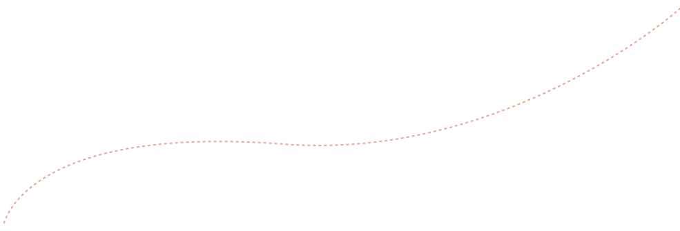
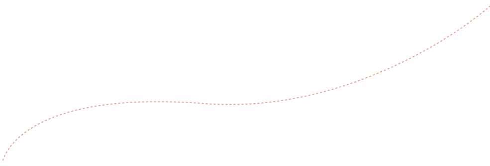


社内報で、みんなの声が聞こえる。


一目でわかる！特徴機能

 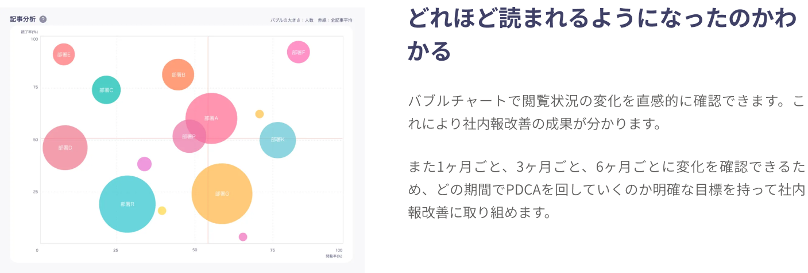
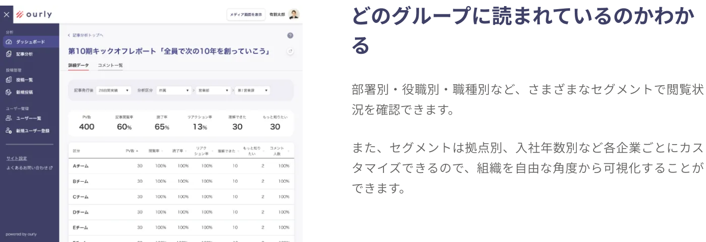
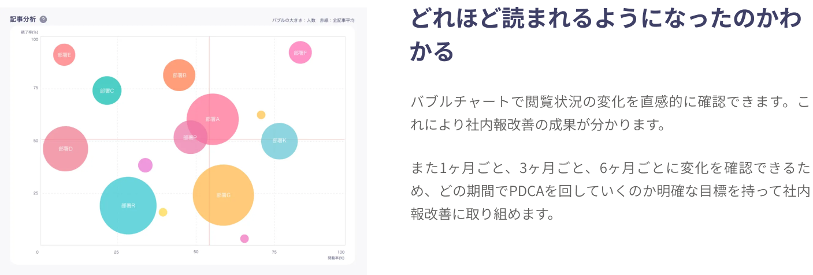
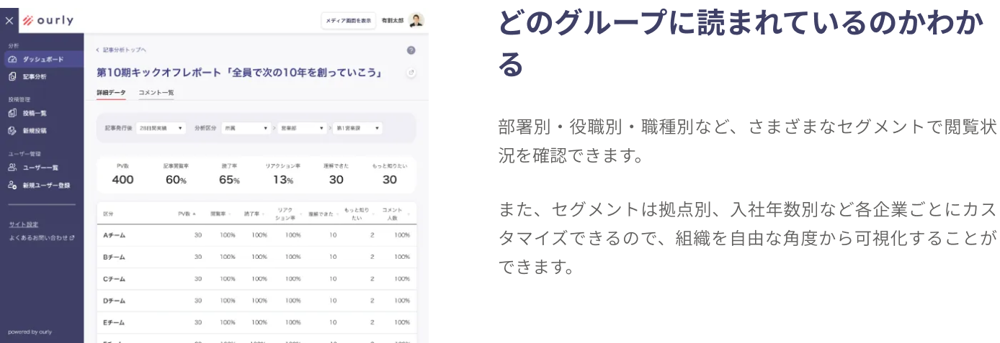
 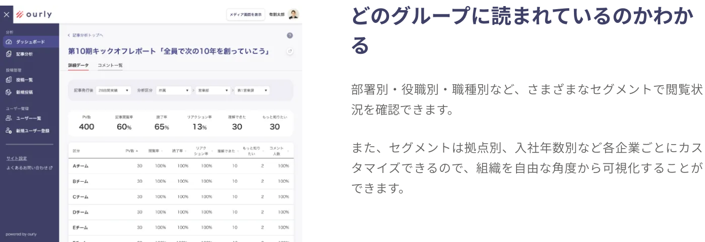
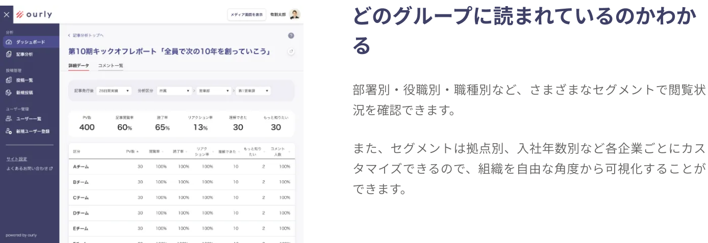


 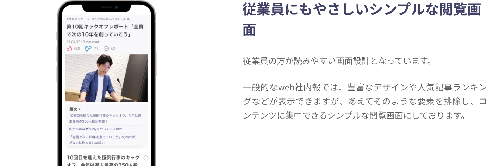
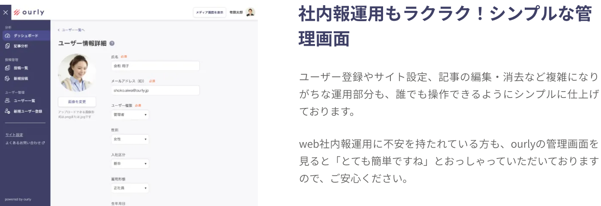
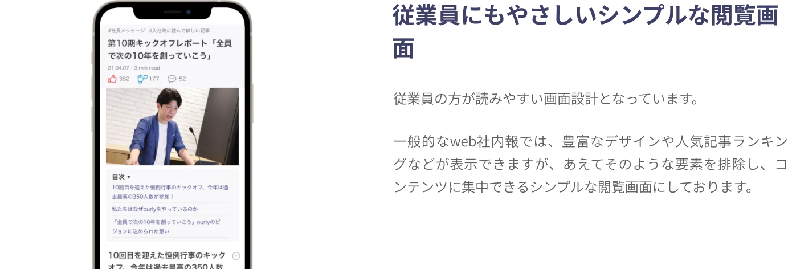
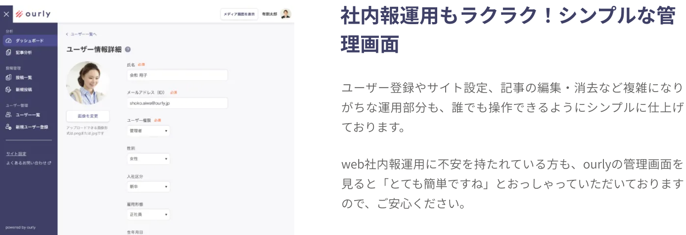
 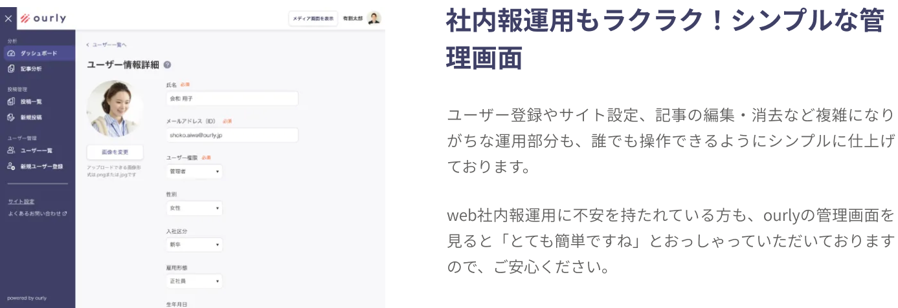
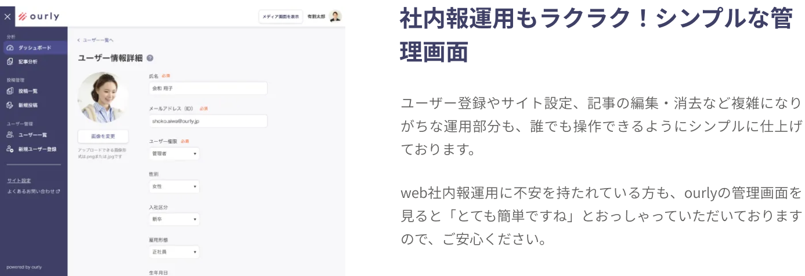


「読了率」までの細かな分析機能で、
社内の透明性の課題を解決
読了率は社員のエンゲージメントをもろに反映しているの
で、個人ごと部署ごとの読了率を毎月見ることによって組
織のコンディションを詳細に把握するようにしています。
組織のコンディションを把握しながら人事と発信内容を工
夫しているので、2年半の運用で効果が出ていると実感し
ています。


一方のコミュニケーションから脱却、
サポートと閲覧性面が決め手
もともと7~8社で検討していたんです。実際にどんな内容
が社員に読まれているのかを分析したいと思っていたの
で、ourlyのサポート面、閲覧性、リアクション機能、分
析機能などを加味して導入を決めさせていただきました。
最終残った3社ほどのデモを使うなかで閲覧性に優れてい
たのがourlyでした。
また、入稿が簡単、月1回のサポートミーティングがある
ことも決め手の1つでした。


よくある質問
Qourlyと他の社内報ツールの違いは何ですか？
A他の社内報にはない細かな分析機能が特徴です。
この分析機能によりさまざまな切り口で従業員の会社への関心度を可視化することができます。
Q利用人数は何名まで対応していますか？
A数十名から千名以上の規模の企業様まで幅広くご利用いただけます。
Q納品までどれくらい時間がかかりますか？
A契約から最短2営業日での納品が可能です。
Qトライアルは行っていますか？
A無料でデモ環境をお渡しすることができます。詳細はお問い合わせください。
Qスマートフォンの対応はしていますか？
Aスマホからの閲覧も可能です。記事を公開すると、自動でPCとスマホに最適化されます。
Q料金について教えてください。
A登録されるアカウントの人数によって料金が変動する形を取っております。
詳細な見積もりが必要な場合は、お手数ですがお問い合わせください。
QITに疎くても入稿は簡単にできますか？
A誰にでも入稿することができます。デモもご用意しておりますので、お気軽にお問い合わせください。


一人ひとりの 声 を、 社内報で